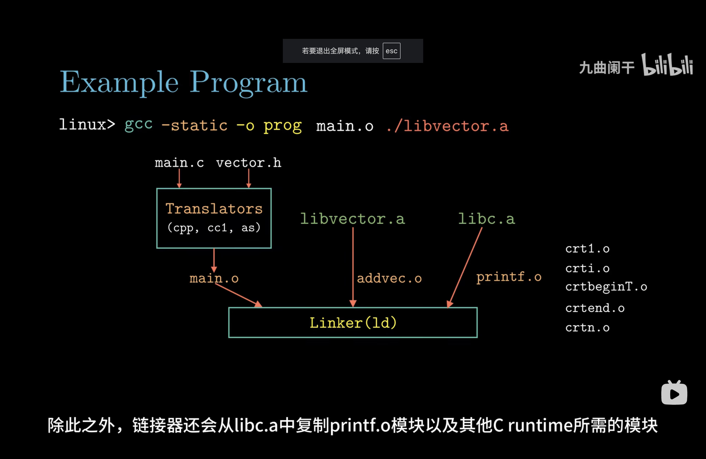
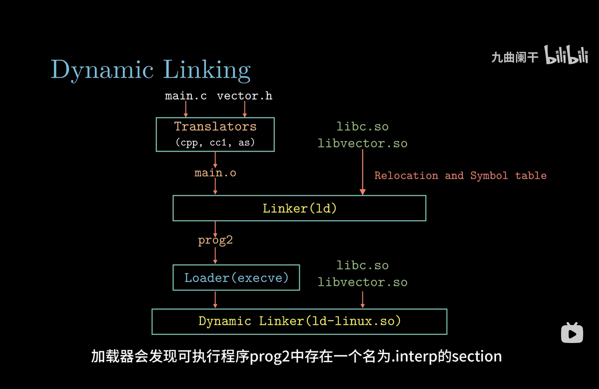

操作系统（一）绪论
第一章 绪论
计算机体系结构

计算机启动后发生了什么

-
上电自检
主板的固件（BIOS 或 UEFI）执行硬件检测，检查 CPU、内存、显卡、键盘等设备是否正常
-
加载 BIOS 或 UEFI
-
CPU 开始执行
0xFFFFFFF0地址处的指令，该地址处是一条JUMP指令，这条指令清空了基址寄存器的值，并让指令跳回到 BIOS 开始处（物理地址为0xF0000，参考上图0xF0000处的标识）以执行 BIOS-
BIOS 或 UEFI 固件初始化计算机硬件，完成底层配置。
-
确认引导顺序（启动顺序），如硬盘、USB 设备或网络启动。
-
加载引导程序（Bootloader）的第一部分，通常位于启动设备的引导扇区。
-
-
主引导记录（Master Boot Record, MBR）
BIOS 从指定的启动设备中读取主引导记录
-
启动加载器（Bootloader）
启动加载器是一个小型程序，负责加载操作系统内核（常用：GRUB多操作系统支持，配置灵活；Windows Boot Manager用于加载 Windows 操作系统）
-
内核初始化
操作系统内核接管硬件的控制。执行真正的根文件系统中的
/sbin/init进程，即系统的 1 号进程。此后，系统的控制权就全权交给/sbin/init进程了 -
系统初始化
/sbin/init进程是系统其它所有进程的父进程，当它接管了系统控制权后，它会根据/etc/inittab文件来执行相应的脚本，从而完成一系列的系统初始化操作 -
用户登陆
程序是如何运行的
准备阶段：
- 通过shell获取可执行程序地址，参数和环境变量
- 通过fork创建子进程
- 通过execve替换当前进程的地址空间，使用加载器将程序加载到内存中
- shell调用wait 或 waitpid 系统调用等待子进程执行结束
运行阶段：
- 读取二进制程序ELF header中的元数据
- 从_start段开始运行
- 初始化运行时环境（如设置全局变量、构造全局对象）
- 准备参数并调用 main 函数
结束阶段：
- 程序调用exit系统调用退出或异常终止
用户如何使用系统其他资源（系统调用）
用户态的程序只能使用内存中用户段，不能使用内核段。内核态可以访问任何内存数据。
中断是用户态进入内核态的唯一方法
系统调用的核心：
- 用户程序中包含
int 0x80指令（中断）的代码 - 操作系统写中断处理，获取想调程序的编号(系统调用号)
- 操作系统根据编号执行相应代码
函数库的不同加载方式（静态链接和动态链接）
静态链接
在编译时将所有需要的库代码直接打包到可执行文件中

动态链接
在程序运行时（加载时或执行过程中）将库文件动态加载到内存中，与程序进行绑定。程序只保存对库的引用，而库本身作为共享资源存储在外部文件中（如 .so 或 .dll）。

对比
| 特性 | 静态链接 | 动态链接 |
|---|---|---|
| 链接时间 | 编译时 | 程序运行时 |
| 可执行文件大小 | 较大（包含库代码） | 较小（引用外部库） |
| 内存占用 | 每个程序独立加载库代码，内存占用多 | 多个程序共享库，节省内存 |
| 运行时效率 | 无需加载外部库，效率高 | 首次加载外部库稍慢 |
| 更新与维护 | 库更新需要重新编译相关程序 | 库更新无需修改程序 |
| 独立性 | 无需依赖外部库 | 依赖外部共享库 |
| 灵活性 | 固定，无法动态更换库 | 灵活，可在运行时加载或替换库 |
如何创建子进程（fork）
fork 的拷贝特点
- 写时复制 (COW)
- fork 的内存部分在最初是浅拷贝形式：
- 父子进程共享相同的物理内存页面（例如代码段、数据段、堆、栈）。
- 只要父子进程不修改内存，所有页面保持共享。
- 当父进程或子进程尝试写入某个页面时，操作系统会触发页面级复制：
- 把要修改的页面复制到新的内存区域，使父子进程各自持有独立的副本。
- 这种机制避免了创建子进程时立即复制所有内存的高昂成本。
- 文件描述符：
- 子进程复制父进程的文件描述符表。
- 文件描述符指向同一内核文件表项，因此父子进程共享文件偏移量。
- 这是一种浅拷贝。
- 信号处理设置、环境变量、当前工作目录等：
- 这些是简单的值拷贝（深拷贝），因为它们不涉及共享资源。